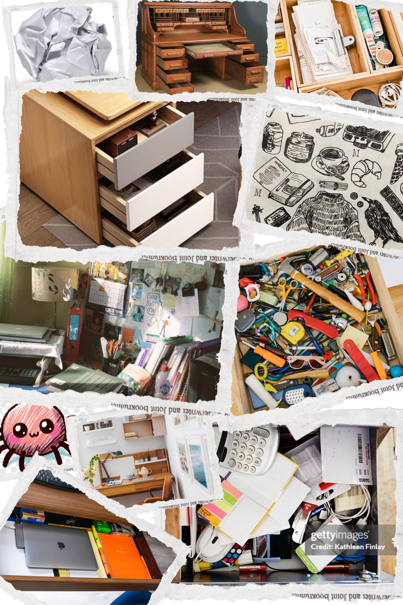
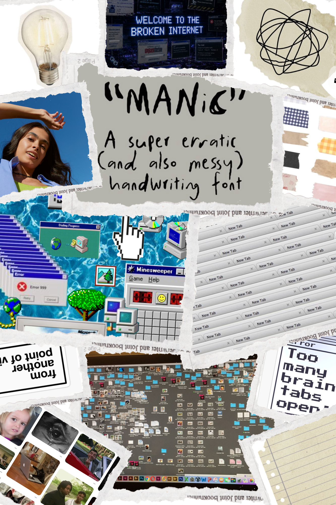
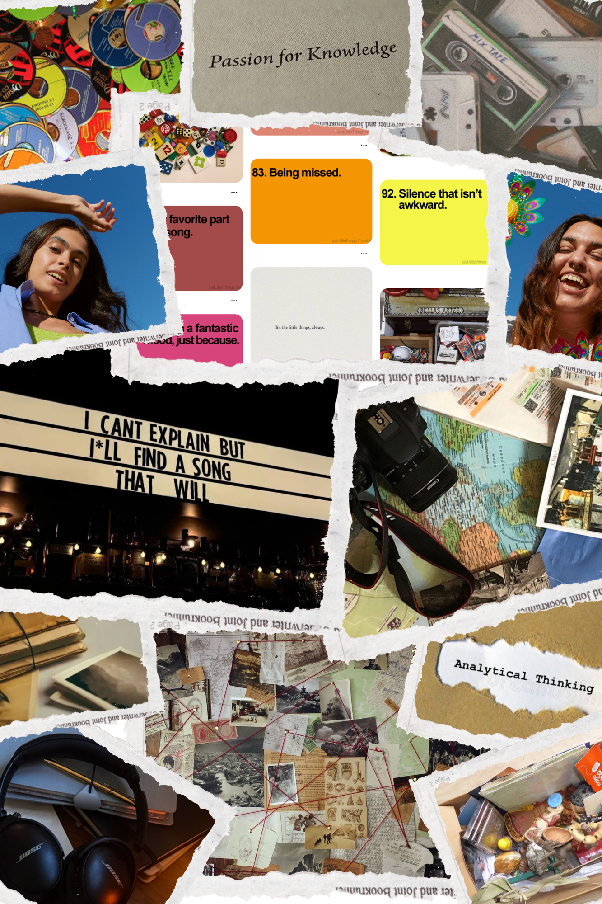
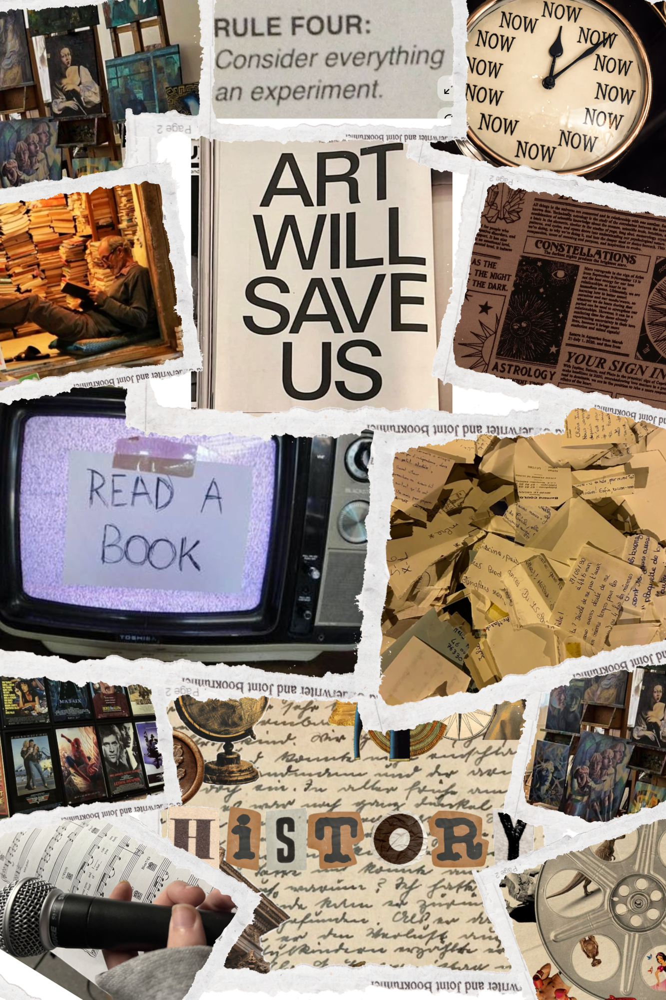
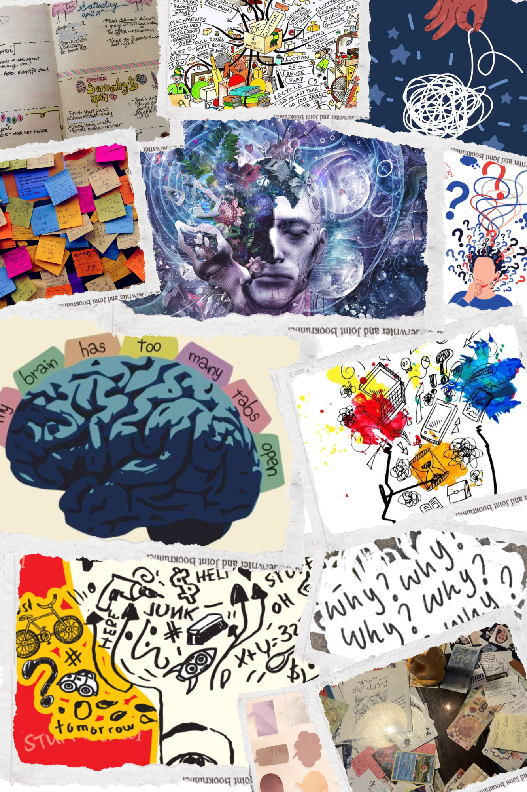

class: center, middle, junk-drawer background-image: url(../../assets/Background.png) <!-- In deze textarea kan je in Markdown de slides aanpassen, zie https://github.com/gnab/remark/wiki voor alle mogelijkheden! --> # Inspiratie voor de digital garden van Inger 'The Digital Junk Drawer' --- # Inhoud 1. The Digital Junk Drawer 2. Inspiratie Artikelen 3. Uitleg Gekozen Afbeeldingen 4. Inspiratie Vormgeving 5. Inspiratie Subonderwerpen 6. Introtekst --- # The Digital Junk Drawer Mijn website wordt een digitale rommella waarin ik verschillende persoonlijke interesses, gedachten en fascinaties verzamel. De homepage wordt vormgegeven als een fysieke lade waarin allerlei losse objecten liggen. Elk object staat voor een stukje content en kan aangeklikt worden om verder te ontdekken. De inhoud wordt verdeeld over verschillende thema's, zoals ‘Overthinking Everything’, ‘Small Things, Big Feelings’, muziek, herinneringen en random fascinaties. Deze onderwerpen hoeven niet strak van elkaar gescheiden te zijn; ze mogen juist door elkaar lopen, net zoals gedachten in mijn hoofd. Het doel is dat de bezoeker niet alleen mijn content leest, maar zelf door mijn rommella gaat snuffelen en onverwachte dingen ontdekt. De website wordt daardoor zowel een verzameling van mijn interesses als een interactieve representatie van hoe mijn hoofd werkt. --- # Inspiratie Artikelen 1. What Your Junk Drawer Reveals About You (NPR): over wat een junk drawer kan vertellen over een persoon. 2. Personal Websites & Digital Gardens: over de geschiedenis en betekenis van persoonlijke websites. 3. Digital Garden (A Wiki You Can Walk Through): interessant als verbinding tussen mijn digital garden en het verzamelen van gedachten. 4. How to archive your work digitally (The Creative Independent): Deze bron liet me nadenken over mijn website als een persoonlijk digitaal archief waarin ik kleine dingen die ik interessant vind kan bewaren. 5. You and your mind garden (Ness Labs): Deze bron inspireerde mij om mijn junk drawer te zien als een verzameling van kleine ideeën en interesses die samen nieuwe verbindingen kunnen vormen. 6. Digital gardens let you cultivate your own little bit of the internet (Tanya Basu): Ik haal uit deze bron dat een persoonlijke website een weerspiegeling van jezelf mag zijn. Digital gardens geven ruimte aan losse interesses, ideeën en ontdekkingen die door elkaar mogen lopen en steeds kunnen veranderen. Dit sluit aan bij mijn onderwerp waarin mijn eigen fascinaties centraal staan. --- # Inspiratie Artikelen 7. Digital Gardening (Go Make Things): Deze bron bevestigde voor mij dat verschillende onderwerpen en soorten content juist naast elkaar mogen bestaan op een persoonlijke website. Dit past bij mijn digitale rommella, waarin ik mijn interesses niet strak van elkaar wil scheiden. 8. On digital gardens, and being a whole person on the web (Go Make Things): Deze bron liet me nadenken over mijn website als een plek waar verschillende kanten van mijn persoonlijkheid naast elkaar mogen bestaan. Mijn junk drawer hoeft daarom geen duidelijk thema te hebben; juist de combinatie van verschillende interesses maakt hem persoonlijk. 9. Personal Website as a Digital Garden (Working Bruno): Deze bron inspireerde mij om mijn junk drawer te zien als een soort tweede brein: een plek waar ik losse ideeën, interesses en vondsten verzamel en waar later nieuwe verbanden tussen kunnen ontstaan. 10. Personal Home Pages on the Web: A Review of Research (Nicola Döring): Deze bron laat zien dat een persoonlijke website verschillende kanten van iemands identiteit kan samenbrengen. Dit past bij mijn onderwerp, waarin losse interesses, gedachten en fascinaties samen een beeld van mij vormen. --- # Uitleg Gekozen Afbeeldingen Ik heb deze verzameling afbeeldingen gekozen omdat ze samen het gevoel en de sfeer van mijn digital junk drawer weergeven. De beelden laten niet alleen fysieke rommellades zien, maar ook onderwerpen die daarmee verbonden zijn, zoals herinneringen, losse objecten, muziek, notities, foto's, internetcultuur en overthinking. Samen vormen ze een visuele vertaling van hoe mijn hoofd werkt: vol verschillende interesses, gedachten en kleine dingen die betekenis hebben. --- # Inspiratie Vormgeving <figure id="foto-collage"> <p></p> <p></p> </figure> --- # Inspiratie Subonderwerpen <figure id="foto-collage"> <p></p> <p></p> <p></p> </figure> --- # Introtekst Ik wil vooral laten zien wat mij opvalt en waar ik nieuwsgierig naar ben. Daarom gebruik ik eigen foto’s, screenshots en korte stukjes tekst, aangevuld met afbeeldingen, links en andere dingen die ik online tegenkom. De combinatie hoeft niet altijd logisch te zijn: juist de verzameling van allerlei kleine vondsten maakt het een echte digitale rommella. # Stukje tekst digital garden Mijn digital junk drawer is een digitale rommella voor gedachten, fascinaties, ideeën en alles wat ik interessant genoeg vind om te bewaren. --- # TO BE CONTINUED... <!-- Laat onderstaande staan anders breekt je presentatie -->